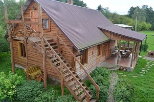
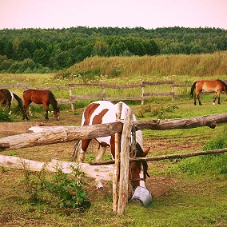

+375 29 8829545
+375 29 8829545
+375 29 8829545
+375 29 8829545

Агроусадьба «У Рыся» была открыта в 2010 году. И несмотря на столь короткий, казалось бы, срок существования, уже успела принять огромное количество гостей. Расположена агроусадьба в деревне Коревичи Свислочского р-на Гродненской области, в 10 км от г. Волковыска. Здесь, вдали от городской пыли и загрязненного воздуха, на просторных землях Свислочины, рядом с живописной речушкой, которая заполнена всегда холодной и чистой водой, и богатым ягодами и грибами лесом, в окружении небольшой жилой деревушки, вы можете по-настоящему насладиться всеми прелестями деревенской жизни, совмещенной с современными комфортными условиями. В усадьбе вас встретят радушные хозяева - Рышард и Янина. Это открытые, жизнерадостные, изобретательные люди, которые не оставят вас без внимания, и сделают все возможное и невозможное, чтобы Вы захотели возвращаться к ним снова и снова.

«Фальварок» занимает большую благоустроенную территорию. На территории находиться: дом хозяев, баня-комплекс вместе с бильярдной, оригинальная баня в форме «бочки», большое количество беседок на берегу реки, качели, необычные деревянные скульптуры (созданные местными мастерами). Здесь вы сможете попариться в настоящей деревенской бане или чудо-бане «бочке», окунуться в старинную купель (Фурако) на улице (особенно приятно это делать зимой), поиграть в русский бильярд в импровизированном баре, отведать различные снеданья, с душой приготовленные прекрасной хозяйкой. Усадьбе принадлежит также 6 гектаров водной зоны, где на берегах причудливых речных изгибов обустроены полянки для отдыха и спортивные площадки. Рядом заканчивается возведение еще одной грандиозной задумки хозяйки – деревеньки ремесленников: дома гончара, ткачихи, кузнеца и резчика по дереву.

В хозяйском доме находится просторный каминный зал, где так уютно и тепло можно провести время с близкими людьми и отметить радостные события. Усадьба может разместить 30 человек на ночлег со всеми удобствами, в задекорированных под старину покоях с печным обогревом, на сказочных, нарезных кроватях. На теретории также находится кухня-избушка и столовая. К главной усадьбе примыкает большая крытая терраса, предназначенная для организации массовых торжеств (свадеб, юбилеев, корпоративов) до 130 человек. Имеются различные виды оформления зала: шарами, свечами, фонариками, цветами. Золотые руки хозяйки и повара приготовят отличные угощения, красиво засервируют стол, а молодые и шустрые официанты помогут вам не беспокоится ни о чем. Для молодоженов изобретательные хозяева предложат различные дополнительные услуги, как то запряженная в украшенную бричку кобыла, на которой молодоженов подвезут на специально оборудованное место для выездной росписи у реки; запуск небесных фонариков и т.д.
Рядом с хозяйским домом возведен своеобразный «дом отдыха», в котором есть и банька с парилкой да душем Шарко, и бильярдный зал с шикарным камином да барной стойкой, и комната отдыха с наборами для фиточая; санузел; терраса. Вам предложат различные виды специально заготовленных веников на любой вкус: березовых, дубовых, рябиновых, с можжевельником. Рядом с банькой расположена большая кадка-купель (Фурако) с барной стойкой, где даже в сильный мороз котел нагревает две тонны воды за несколько часов.
С недавнего времени в агроусадьбе появились заморские красавицы – породистые кобылки, на которых вам будет предложено покататься по просторным владениям. В приручении кобылок поможет очаровательный инструктор.

Также на усадьбе проводятся ярмарки, художественные выставки и турниры (стрелковые, конные, лыжные), байдарочные сплавы и велосипедные маршруты; народные выступления и турслеты.